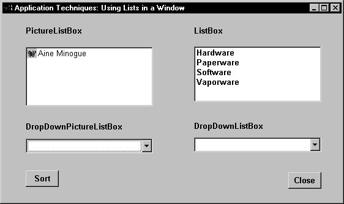
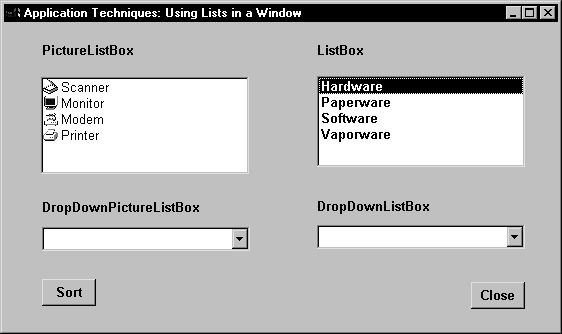

You can use lists to present information to the user in simple lists with scrollbars. You can present this information with text and pictures (in a PictureListBox) or with text alone (using a ListBox).
Depending on how you design your application, the user can select one or more list items to perform an action based on the list selection.
You add ListBox and PictureListBox controls to windows in the same way you add other controls: select ListBox or PictureListBox from the Insert>Control menu and click the window.
In the painter Use the Item property page for the control to add new items.
 To add items to a ListBox or PictureListBox:
To add items to a ListBox or PictureListBox:
Select the Items tab in the Properties view for the control.
Enter the name of the items for the ListBox. For a PictureListBox, also enter a picture index number to associate the item with a picture.
For instructions on adding pictures to a PictureListBox, see "Adding pictures to PictureListBox controls".
In a script Use the AddItem and InsertItem functions to dynamically add items to a ListBox or PictureListBox at runtime. AddItem adds items to the end of the list. However, if the list is sorted, the item will then be moved to its position in the sort order. Use InsertItem if you want to specify where in the list the item will be inserted.
For example, this script adds items to a ListBox:
This.AddItem ("Vaporware")
This.InsertItem ("Software",2)
This.InsertItem ("Hardware",2)
This.InsertItem ("Paperware",2)
This script adds items and images to a PictureListBox:
This.AddItem ("Monitor",2)
This.AddItem ("Modem", 3)
This.AddItem ("Printer",4)
This.InsertItem ("Scanner",5,1)
 Using the Sort property You can set the control's sort property to TRUE or
check the Sorted check box on the General property page to ensure
that the items in the list are always arranged in ascending alphabetical
order.
Using the Sort property You can set the control's sort property to TRUE or
check the Sorted check box on the General property page to ensure
that the items in the list are always arranged in ascending alphabetical
order.
In the painter Use the Pictures and Items property pages for the control to add pictures.
 To add pictures to a PictureListBox:
To add pictures to a PictureListBox:
Select the Pictures tab in the Properties view for the control.
Select an image from the stock image list, or use the Browse button to select a bitmap, cursor, or icon image.
Select a color from the PictureMaskColor drop-down menu for the image.
The color selected for the picture mask will appear transparent in the PictureListBox.
Select a picture height and width.
This will control the size of the images in the PictureListBox.
 Dynamically changing image size You can use a script to change the image size at runtime by
setting the PictureHeight and PictureWidth properties before you
add any pictures when you create a PictureListBox.
Dynamically changing image size You can use a script to change the image size at runtime by
setting the PictureHeight and PictureWidth properties before you
add any pictures when you create a PictureListBox.
Repeat the procedure for the number of images you plan to use in your PictureListBox.
Select the Items tab and change the Picture Index for each item to the appropriate number.
In a script Use the AddPicture function to dynamically add pictures to a PictureListBox at runtime. For example, the script below sets the size of the picture, adds a BMP file to the PictureListBox, and adds an item to the control:
This.PictureHeight = 75
This.PictureWidth = 75
This.AddPicture ("c:\ArtGal\bmps\butterfly.bmp")
This.AddItem("Aine Minogue",8)
Use the DeletePicture and DeletePictures functions to delete pictures from either a PictureListBox or a DropDownPictureListBox.
When you use the DeletePicture function, you must supply the picture index of the picture you want to delete.
For example:
This.DeletePicture (1)
deletes the first Picture from the control, and
This.DeletePictures ()
deletes all the pictures in a control.
Example The following window contains a ListBox control and a PictureListBox. The ListBox control contains four items, and the PictureListBox has one:

When the user double-clicks an item in the ListBox, a script executes to:

This is the script used in the ListBox DoubleClicked event:
int li_count
//Find out the number of items
//in the PictureListBox
li_count = plb_1.totalItems()
// Find out which item was double-clicked
// Then:
// * Delete all the items in the PictureListBox
// * Add the items associated with the
// double-clicked item
CHOOSE CASE index
CASE 1
DO WHILE plb_1.totalitems() > 0
plb_1.DeleteItem(plb_1.totalitems())
LOOP
plb_1.AddItem("Monitor",2)
plb_1.AddItem("Modem",3)
plb_1.AddItem("Printer",4)
plb_1.InsertItem("Scanner",5,1)
CASE 2
DO WHILE plb_1.totalitems() > 0
plb_1.DeleteItem(plb_1.totalitems())
LOOP
plb_1.InsertItem("GreenBar",6,1)
plb_1.InsertItem("LetterHead",7,1)
plb_1.InsertItem("Copy",8,1)
plb_1.InsertItem("50 lb.",9,1)
CASE 3
DO WHILE plb_1.totalitems() > 0
plb_1.DeleteItem(plb_1.totalitems())
LOOP
plb_1.InsertItem("SpreadIt!",10,1)
plb_1.InsertItem("WriteOn!",11,1)
plb_1.InsertItem("WebMaker!",12,1)
plb_1.InsertItem("Chessaholic",13,1)
CASE 4
DO WHILE plb_1.totalitems() > 0
plb_1.DeleteItem(plb_1.totalitems())
LOOP
plb_1.InsertItem("AlnaWarehouse",14,1)
plb_1.InsertItem("AlnaInfo",15,1)
plb_1.InsertItem("Info9000",16,1)
plb_1.InsertItem("AlnaThink",17,1)
END CHOOSE